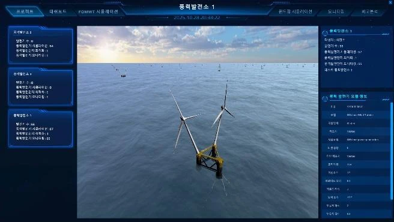

국가 R&D
부유식 해상 풍력발전단지
설계 최적화 플랫폼
2024.09 시작, 바론시스템
해상 풍력단지의 배치와 개별 터빈의 상태를 3D로 확인하고, 시뮬레이션을 실행해 해석 결과를 살펴보는 산업용 플랫폼입니다. 단지 전체를 보는 화면부터 터빈별 상세 화면, 결과 차트와 테이블까지 Unity에서 사용할 수 있도록 개발했습니다.
- 담당 역할
- Unity 기반 3D 시각화 및 시뮬레이션 통합 플랫폼 전담 개발
개발한 기능
- 풍력단지의 3D 환경과 터빈 조작
해양 환경 위에 부유식 풍력터빈을 배치하고, Unity 물리 엔진을 활용해 무어링라인 시뮬레이션과 터빈 회전 애니메이션을 구현했습니다. 사용자가 터빈을 선택하면 해당 터빈의 상세 정보 화면으로 전환되도록 구성했습니다.
- 대규모 장면의 렌더링 최적화
여러 터빈과 오브젝트가 표시되는 단지 장면에 카메라 거리 기반 LOD와 오브젝트 풀링을 적용했습니다. MaterialPropertyBlock을 활용한 머테리얼과 텍스처 최적화도 함께 진행해 대규모 단지의 렌더링 부하를 관리했습니다.
- 해석 결과의 실시간 수신과 시각화
Python 백엔드와 협업해 gRPC 기반 외부 해석 서버 연동을 구현했습니다. MariaDB에 적재된 시뮬레이션 결과를 Python 서버를 통해 Unity에서 수신하고, 새 데이터를 차트와 테이블에 실시간으로 반영했습니다.
- 단지 화면과 시뮬레이션 UI 통합
단지 전체를 보는 씬, 개별 터빈 씬, 2D UI를 싱글톤 패턴 기반으로 통합 관리했습니다. 프로젝트 안에서 단지와 터빈을 선택한 뒤 시뮬레이션을 실행하고 결과를 확인하는 작업 흐름을 구성했습니다.
단지와 터빈을 계층적으로 관리하고, 선택한 터빈의 시뮬레이션 실행과 결과 확인을 하나의 Unity 플랫폼에서 처리할 수 있도록 만들었습니다.
화면 구성과 후속 작업
업무별 화면 구성
대시보드, FOMWT 시뮬레이션, 윈드팜 시뮬레이션, 모니터링, 비교분석 기능을 탭으로 나누었습니다. 단지 씬과 개별 터빈 씬, 각 기능의 UI 전환을 통합 관리했습니다.

풍황 데이터와 외부 해석 도구 연동
풍력단지 설계에 사용할 기초 자료를 확보하기 위해 풍황 데이터를 수집하고 전처리했습니다. 풍력터빈 구조와 공력을 해석하는 HAWC2의 결과를 플랫폼에 연결하는 작업은 포트폴리오 자료 작성 당시 진행 중이었습니다.